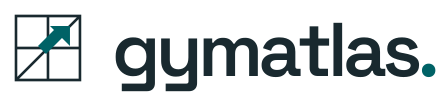
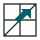

WORTMARKE & ZEICHEN
Im Detail.
In voller Größe.
Die Zeichen aus den Webentwürfen. Ohne Ablenkung, auf hellem und dunklem Grund.
GYMATLAS / 01INK AUF PAPER

Originalschrift als echte Vektorpfade. Scharf in jeder Größe.
NEGATIVVARIANTEPAPER AUF INK

Helle Wortmarke und türkiser Akzent für dunkle Anwendungen.
DAS ZEICHEN / VERGRÖSSERT

a.
DIE GESTALTERISCHE IDEE
Orientierung wird zum Zeichen.
Ein reduziertes Atlasraster, eine klare Diagonale und der Pfeil nach vorn. Gymatlas steht für Orientierung und den eigenen Weg zum passenden Trainingsort.
Das Zeichen ist eigenständig einsetzbar. Die kleine Punktsetzung verbindet die Wortmarke mit der gemeinsamen Markenfamilie.